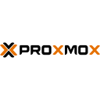
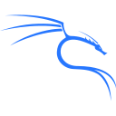

Réseau
Adressage IPv4 et sous-réseaux, routage entre réseaux, VLAN, NAT et redirections de ports. Configuration Wi-Fi et pratique du VPN.
IPv4VLANNATVPNWi-FiWireshark
Voir une réalisation associée05 / RÉFÉRENTIEL & PRATIQUE
Relier les réalisations aux compétences du BTS, avec des preuves concrètes et une progression continue.
Chaque coche renvoie à une réalisation détaillée sur ce portfolio. Le tableau de synthèse de l’épreuve E5, présenté selon le modèle officiel, est téléchargeable en bas de page.
| Réalisation | C1 | C2 | C3 | C4 | C5 | C6 |
|---|
Présenté selon le modèle de l’annexe VI-1 de la circulaire nationale. Il ne reprend que les réalisations du BTS ; mes projets personnels et ceux du lycée sont présentés dans les réalisations.
Technologies abordées dans ma formation et mes projets, sans évaluation chiffrée de maîtrise.
Adressage IPv4 et sous-réseaux, routage entre réseaux, VLAN, NAT et redirections de ports. Configuration Wi-Fi et pratique du VPN.
Active Directory, DNS/DHCP, GPO, permissions NTFS et partages réseau. Pare-feu Windows et politiques de comptes. Réplication AD et continuité des services dans le TP NetVision.
Administration Debian : utilisateurs, groupes, permissions, services et journaux. Gestion des disques, montages et volumes ; partages Samba accessibles depuis Windows.
Création et clonage de VM sur Proxmox et VirtualBox, interfaces réseau, snapshots et sauvegardes. Stockage RAID pratiqué en formation ; NAS personnel OpenMediaVault avec SSD et HDD.
Filtrage pfSense, DMZ, IDS/IPS Suricata, pfBlockerNG et analyse des journaux. Sécurisation Linux, administration SSH et transferts de fichiers. Audit Nmap et recherche de CVE en laboratoire.
NGINX, Apache, PHP-FPM et MariaDB : déploiement d’applications, bases et utilisateurs SQL, HTTPS auto-signé avec OpenSSL. Nextcloud relié à Active Directory via LDAP.
Montage et démontage, nettoyage, installation Windows/Linux et dual boot, clonage avec Macrium. Préparation de clés bootables, réglages BIOS/UEFI et diagnostic du stockage.
Figma, Builder.io, VS Code et GitHub Copilot pour le stage web ; React, Vite, TypeScript, Tailwind CSS, WordPress headless et Netlify. Documentation technique et schémas réseau pour les TP.
Chercher une information fiable, essayer une solution et demander de l’aide quand c’est nécessaire.
Décomposer une tâche, vérifier les étapes et garder une trace du travail réalisé.
Écouter les besoins, expliquer ses choix et partager les avancées d’un projet.

Proxmox
Kali LinuxInstaller un système, remplacer des composants, diagnostiquer une panne et accompagner un utilisateur.
Installation de NAS, partages SMB/NFS, notions de RAID et mise en place de serveurs web Apache ou NGINX.
Exercices Python et SQL, adaptation de code pour les robots à capteurs et ESP32-C3.